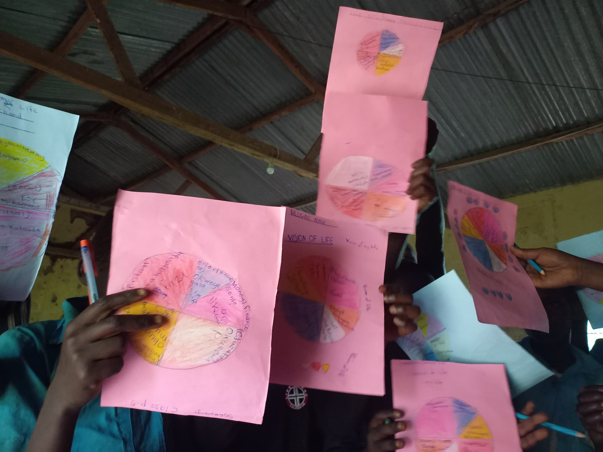

Success Stories
From Failure to Foundation: Esther's Story
After failing her A-Level exams twice, Esther Namukasa nearly gave up on her dreams. Today she runs a thriving social enterprise employing 30 young women…
Read MoreStories, tips, and reflections on mindset, leadership, and youth development.

Leadership is not a title — it is a set of daily choices. We break down five evidence-backed habits that separate good leaders from truly transformative ones, and how you can start building them today.
Read ArticleExplore insights and stories from our community
After failing her A-Level exams twice, Esther Namukasa nearly gave up on her dreams. Today she runs a thriving social enterprise employing 30 young women…
Read MoreCarol Dweck's landmark research has shown that the beliefs we hold about our own abilities profoundly shape our lives. Here is what it means for Uganda's youth…
Read MoreTheory can only take you so far. Our community leadership programme puts young people in charge of solving real problems — and the results speak for themselves.
Read More